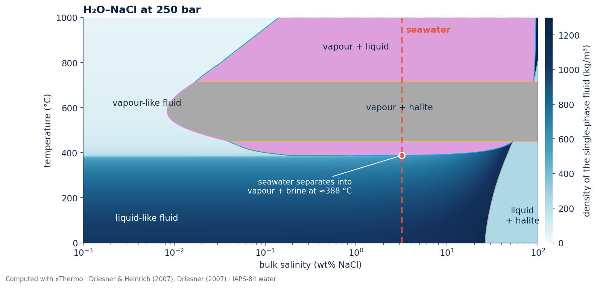
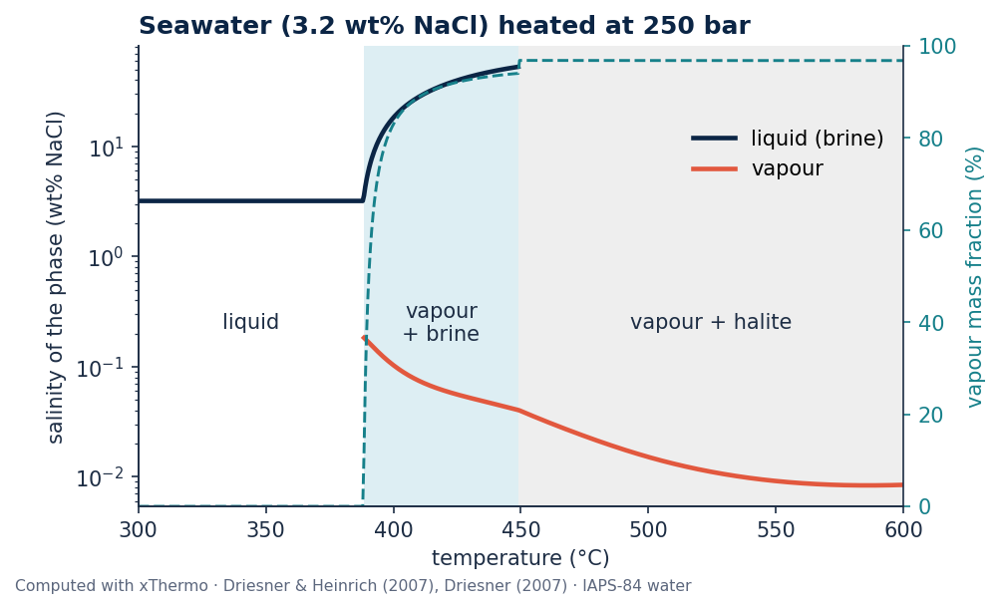

xThermo¶
Phase relations and thermodynamic properties of H₂O–NaCl fluids from 0 to 1000 °C and 1 to 5000 bar, after Driesner & Heinrich (2007) and Driesner (2007). A C++ library for simulation codes, with a Python interface for NumPy and Matplotlib.

What xThermo computes¶
-
Phase relations
Explore the stability and coexistence of liquid, vapour and halite across temperature, pressure and salinity, including the critical curve.
-
Fluid properties
Calculate density, specific enthalpy, heat capacity, viscosity and thermodynamic derivatives for H₂O–NaCl fluids and their coexisting phases.
-
Python for science
Evaluate individual states or entire NumPy arrays, and create phase diagrams and thermodynamic property maps using Python.
-
C++ for simulation codes
Integrate xThermo into C++ simulation software through its CMake interface, with support for robust error handling and parallel applications.
-
Pure water and NaCl
Calculate properties of pure water using IAPS-84 or IAPWS-95, as well as solid and liquid NaCl.
-
Checked against the literature
The numerical implementation has been systematically verified against published reference data. See Model and limitations for details.
Seawater heated at 250 bar¶

Python code for both figures
"""Homepage figures: the H2O-NaCl phase diagram at 250 bar with the density of the single-phase fluid, and seawater
heated at 250 bar.
Writes hero_desktop.png, hero_mobile.png and seawater_250bar.png to docs/assets/img (or the directory given as the
first argument or in $XTHERMO_FIGURE_DIR). Needs xthermo and matplotlib.
"""
import os
import matplotlib
matplotlib.use("Agg")
import matplotlib.pyplot as plt
import numpy as np
import xthermo
from xthermo import H2ONaCl
import _style as st
st.apply()
OUT = st.outdir(os.path.join(os.path.dirname(os.path.abspath(__file__)), "..", "assets", "img"))
sw = H2ONaCl.cH2ONaCl("IAPS84")
P = 250e5 # Pa
X_SEAWATER = 0.032 # kg/kg (3.2 wt% NaCl)
# fluid density on a T-X grid; the multiphase regions are drawn over it by plot_slice
T = np.linspace(1, 999, 400) + 273.15
X = np.logspace(-5, 0, 400)
s = xthermo.tpx(sw, T[:, None], P, X[None, :], errors="nan")
section = sw.Slice_constP(P)
# seawater heated at 250 bar: where it separates into brine and vapour, and how salty each phase is
Tp = np.linspace(300, 600, 601) + 273.15
q = xthermo.tpx(sw, Tp, P, X_SEAWATER, errors="nan")
two_phase = q.has("vapour") & q.has("liquid")
vapour_mass = np.where(q.ok, q.S_v * q.Rho_v / q.Rho, np.nan)
tc = Tp - 273.15
T_SPLIT = tc[two_phase].min() # °C, where seawater starts to separate into vapour and brine
T_HALITE = tc[two_phase].max() # °C, above it vapour + halite
def phase_diagram(figsize, fontsize, labels, note, note_xy):
with plt.rc_context({"font.size": fontsize}):
fig, ax = plt.subplots(figsize=figsize)
ax.set_xscale("log")
field = xthermo.plot_property(ax, s, "Rho", x="X", y="T", cmap=st.OCEAN, vmin=0, vmax=1300, colorbar=False)
xthermo.plot_slice(ax, section, x="X", y="T", points=False)
ax.axvline(X_SEAWATER * 100, color=st.CORAL, lw=1.6, ls=(0, (5, 3)), zorder=5)
ax.set_xlim(1e-3, 100)
ax.set_ylim(0, 1000)
ax.set_xlabel("bulk salinity (wt% NaCl)")
ax.set_ylabel("temperature (°C)")
cb = fig.colorbar(field["mesh"], ax=ax, pad=0.015, fraction=0.04, aspect=30)
cb.set_label("density of the single-phase fluid (kg/m³)")
cb.outline.set_visible(False)
for x, y, text, colour in labels:
ax.text(x, y, text, color=colour, ha="center", va="center", zorder=6)
ax.text(X_SEAWATER * 100 * 1.12, 965, "seawater", color=st.CORAL, ha="left", va="top", zorder=6,
fontweight="bold")
ax.plot([X_SEAWATER * 100], [T_SPLIT], "o", ms=fontsize * 0.7, mfc=st.CORAL, mec="white", mew=1.5, zorder=7)
ax.annotate(note, (X_SEAWATER * 100, T_SPLIT), xytext=note_xy, color="white", ha="right", va="center",
zorder=7, fontsize=fontsize * 0.9, arrowprops=dict(arrowstyle="-", color="white", lw=1))
ax.set_title("H₂O–NaCl at 250 bar")
return fig
desktop = phase_diagram((11, 5.2), 11, [
(1.0, 870, "vapour + liquid", st.NAVY),
(3, 600, "vapour + halite", st.INK),
(68, 120, "liquid\n+ halite", st.NAVY),
(5e-3, 110, "liquid-like fluid", "white"),
(5e-3, 620, "vapour-like fluid", st.INK),
], f"seawater separates into\nvapour + brine at ≈{T_SPLIT:.0f} °C", (0.9, 250))
desktop.text(0.0, -0.02, st.CREDIT, fontsize=8, color=st.MUTED, transform=desktop.transFigure)
desktop.savefig(os.path.join(OUT, "hero_desktop.png"))
mobile = phase_diagram((6.2, 6.4), 14, [
(1.0, 870, "V + L", st.NAVY),
(3, 600, "V + H", st.INK),
(52, 110, "L+H", st.NAVY),
(6e-3, 120, "liquid-like", "white"),
], f"splits at\n≈{T_SPLIT:.0f} °C", (0.9, 260))
mobile.savefig(os.path.join(OUT, "hero_mobile.png"))
fig, ax = plt.subplots(figsize=(6.6, 4.0))
ax.axvspan(T_SPLIT, T_HALITE, color="#ddeef3", lw=0, zorder=0)
ax.axvspan(T_HALITE, tc[-1], color="#eeeeee", lw=0, zorder=0)
ax.semilogy(tc, np.where(q.has("liquid"), q.X_l * 100, np.nan), color=st.NAVY, lw=2.2, label="liquid (brine)")
ax.semilogy(tc, np.where(q.has("vapour"), q.X_v * 100, np.nan), color=st.CORAL, lw=2.2, label="vapour")
ax.set_ylabel("salinity of the phase (wt% NaCl)")
ax.set_xlabel("temperature (°C)")
ax.set_xlim(tc[0], tc[-1])
ax.legend(loc="upper right", bbox_to_anchor=(1.0, 0.86))
ax2 = ax.twinx()
ax2.spines["right"].set_visible(True)
ax2.plot(tc, vapour_mass * 100, color=st.TEAL, lw=1.4, ls="--")
ax2.set_ylim(0, 100)
ax2.set_ylabel("vapour mass fraction (%)", color=st.TEAL)
ax2.tick_params(axis="y", colors=st.TEAL)
ax.text((T_SPLIT + T_HALITE) / 2, 0.25, "vapour\n+ brine", ha="center", va="center", color=st.INK)
ax.text((T_HALITE + tc[-1]) / 2, 0.25, "vapour + halite", ha="center", va="center", color=st.INK)
ax.text((tc[0] + T_SPLIT) / 2, 0.25, "liquid", ha="center", va="center", color=st.INK)
ax.set_title("Seawater (3.2 wt% NaCl) heated at 250 bar")
fig.text(0.0, -0.03, st.CREDIT, fontsize=7.5, color=st.MUTED, transform=fig.transFigure)
fig.savefig(os.path.join(OUT, "seawater_250bar.png"))
print("hero_desktop.png hero_mobile.png seawater_250bar.png written to", os.path.abspath(OUT))
The script uses a few shared style settings from
docs/gallery/_style.py.
Quick start¶
import numpy as np
import xthermo
from xthermo import H2ONaCl
sw = H2ONaCl.cH2ONaCl("IAPS84") # water backend: IAPS-84
T = np.linspace(300, 600, 7) + 273.15 # K
s = xthermo.tpx(sw, T, 250e5, 0.032) # p in Pa, salinity in kg/kg
for t, name, rho in zip(T - 273.15, s.phase_name, s.Rho):
print(f"{t:5.0f} °C {name:8s} {rho:7.1f} kg/m³")
#include "H2ONaCl.h"
#include <iostream>
using namespace xThermal;
int main() {
H2ONaCl::cH2ONaCl eos("IAPS84");
ThermodynamicProperties props;
eos.UpdateState_TPX(props, 573.15, 300e5, 0.1); // T [K], p [Pa], X [kg/kg]
std::cout << props.Rho << " kg/m3, " << eos.phase_name(props.phase) << std::endl;
}
xThermo can currently be installed from source. See the Installation guide for instructions and requirements. Distribution through PyPI is planned for a future release.
xThermo is developed and maintained by the Seafloor Modeling group at the GEOMAR Helmholtz Centre for Ocean Research Kiel.
The library implements the H₂O–NaCl formulations of Driesner & Heinrich (2007) and Driesner (2007). Please cite these publications when using xThermo. For development credits, citation information and licensing, see About.